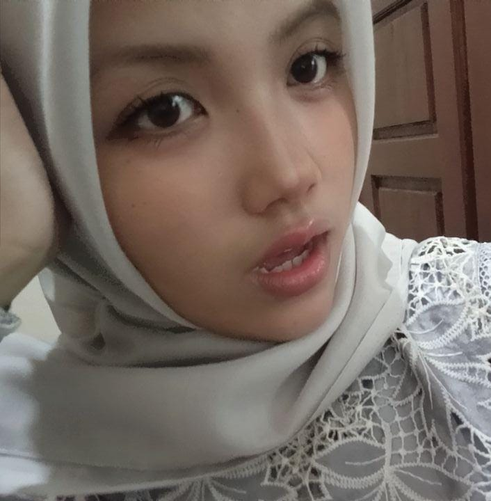

Saya Khanza Amelia, saya sangat suka hewan, terutama kucing. Saya juga suka mengedit di Canva dan menjual hasilnya (moodboard untuk RP di Telegram).
Saya kadang mudah terdistraksi saat mengerjakan sesuatu, tapi tetap berusaha fokus.
Saya suka naik ke curug dan turun lewat arung jeram (itu seru banget!). Kalau punya keberanian lebih, saya ingin mencoba terjun payung dan surfing.